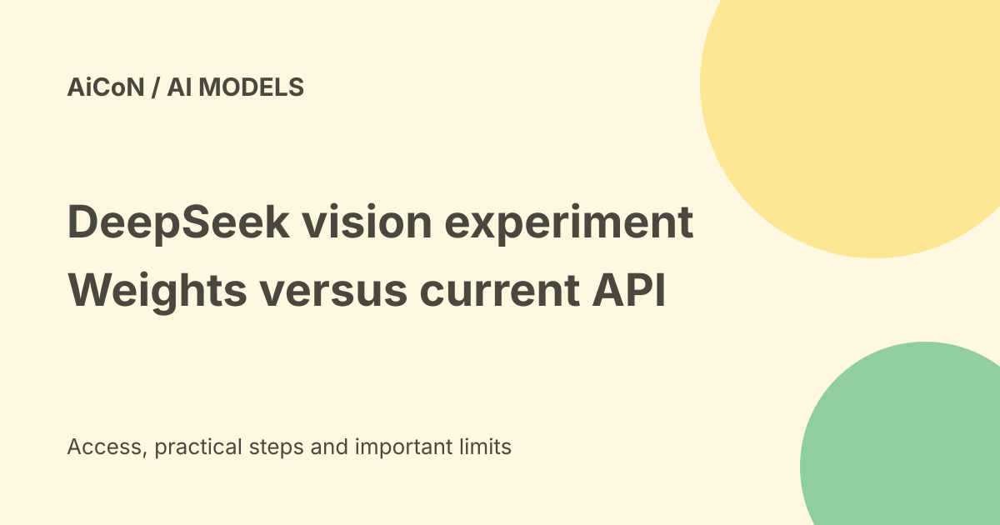

DeepSeek-V4-Flash-Vision-Exp: open weights, but a retired API name
DeepSeek-V4-Flash-Vision-Exp is an experimental image-and-text model released in the DeepSeek-V4 family. Its original repository remains available under MIT. But the current API docs say the old vision-exp model name now routes to DeepSeek-V4.1 Flash, not the original experiment.

deepseek-v4-flash-vision-exp is still accepted as a legacy name, but its model was retired. Calls now run DeepSeek-V4.1 Flash and are billed at Flash rates.What is the experimental vision model?
The official Hugging Face model card describes an experimental multimodal model built on DeepSeek-V4 Flash with added visual modules and further training. Multimodal means it accepts more than one kind of input, here images and text. The repository lists a 305-billion-parameter model. Parameters are the learned values inside the model, not the number of words it can read at once.
DeepSeek reports stronger results on multimodal agent tasks compared with its text-only Flash-0731 model. Examples include chart interpretation and tasks involving visual information. A model can supply reasoning and tool-call outputs, but an agent framework must connect and execute the tools. Downloading weights does not automatically give the model safe control of your computer.
Open weights are not the same as a free API
| Original repository | 305B image-text model, marked experimental. |
|---|---|
| License | MIT, per the official repository. |
| Local costs | Hardware, storage, power and maintenance still matter. |
| Current API name | Use the current docs' deepseek-flash route for the current Flash service. |
| Legacy vision-exp alias | Served by DeepSeek-V4.1 Flash and billed at Flash rates. |
MIT permits use under its terms; it is not a promise that a hosted provider will process requests for free. Recheck current API pricing rather than using launch-day rates. This guide does not provide a verified rupee quote or regional billing guarantee.
Is this a normal laptop download?
Not realistically as a simple beginner setup. 305B is a very large model. The official inference guide uses tensor parallelism, which splits work across ranks, and gives an example conversion with four ranks. It calls its implementation a readable reference, not a production serving engine.
Do not treat four ranks as proof that any four GPUs will fit. Memory use depends on weight format, context, serving code and other settings. Quantized builds reduce precision and may reduce memory needs, but they still need exact compatibility checks. A community build for llama.cpp, LM Studio or Ollama is not automatically verified to support this experiment's vision modules correctly.
A careful evaluation route
- Decide whether you need the original experiment or today's hosted model. They are not interchangeable.
- For original weights, read the official model card, license and inference README before downloading large files.
- Check your hardware and the serving engine's support for this exact model and its image encoder.
- Follow the repository's dependency, checkpoint-conversion and inference instructions in an isolated environment.
- Start with non-sensitive sample images. Compare the answer to the image and keep actions disabled until you understand failures.
- For the paid API, consult current docs and rates; do not assume the legacy name preserves old behaviour.
We did not download weights, run inference, connect an API key or test community quantizations. No local performance or GPU-fit result is claimed.
How to read the benchmark claims
The model card's scores are DeepSeek's published evaluations. It describes the harness and generation settings, and notes that the text-only comparison ignores visual elements in some tasks. Those details affect the comparison. They are not independent proof that the model is best for your workload.
A good evaluation uses your own permitted sample tasks and measures factual accuracy, latency, cost and action errors. Inspect screenshots for hidden private details before uploading them to a hosted provider.
India and privacy caveats
Repository access was checked, not an Indian account's API eligibility or payment path. Local use keeps inference on your own system only if the serving stack and connected tools are local. A hosted API receives the inputs you send; open weights do not change that data flow.
Frequently asked questions
Is the original model still downloadable?
The official repository remains available. Check its current files before planning a large download.
Does the old API alias still run the experiment?
No. Current docs say it routes to V4.1 Flash.
Are launch benchmarks independent?
No. The cited results are published by DeepSeek.
What changed since the earlier post?
The earlier launch post described a new experiment. This guide adds the current retired-API warning, separates weights from paid service and avoids promising easy local use from a community quantization alone.
Sources: Official model card · Reference inference guide · Current API and retirement note. Checked 7 October 2026.